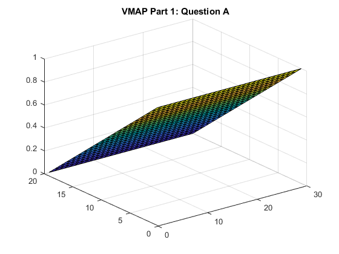
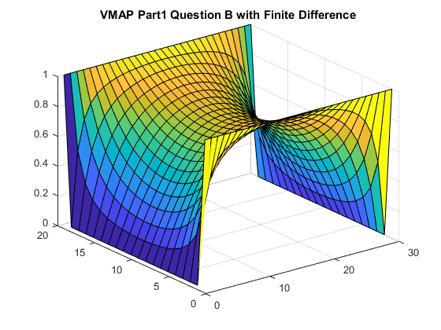
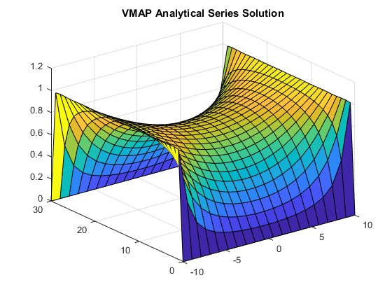

Contents
%%Assignment 2: Part 1 %Laplace equations will be solved in this part using finite difference.
Part 1: Question A
%First section of this part will solve for the voltage across a frame where %one boundary is set to a fixed 1 volt and the opposing edge of the frame %is set to a fixed 0 volts. This problem was solved in an earlier PA %session using an iteration method. clc %Set dimensions of frame (frame ratio is L/W = 3/2) L=30; ny=L; nx=2*L/3; %Fixed Voltage will be 1 volt vx=1; %Create G matrix. Each row of this matrix corresponds to a single element %in the physical matrix (think iteration method approach). However the rest %of the row corresponds to every other element in the physical matrix with %respect to the identified point. G=sparse(nx*ny,nx*ny); %Boundary Conditions v=zeros(1,nx*ny); %Construct G matrix, go up each column from point (0,0), then move over to %next column. Continue till you reach final element at the top right of matrix %with a position of(nx,ny) in the nx*ny position. for i=1:nx for j = 1:ny n=j+(i-1)*ny; if(i==1) G(n,:)=0; G(n,n)=1; v(n)=vx; elseif(i==nx) G(n,:)=0; G(n,n)=1; v(n)=0; elseif(j==1) G(n,:)=0; G(n,n)=-3; G(n,n+1)=1; G(n,n-ny)=1; G(n,n+ny)=1; elseif(j==ny) G(n,:)=0; G(n,n)=-3; G(n,n-1)=1; G(n,n-ny)=1; G(n,n+ny)=1; else G(n,:)=0; G(n,n)=-4; G(n,n-1)=1; G(n,n+1)=1; G(n,n-ny)=1; G(n,n+ny)=1; end end end temp=G\v'; %Backmap 'temp' vector into a physical matrix called vmap, same element-by- %element approach as what was used in the g-matrix construction. vmap=zeros(nx,ny); for i=1:nx for j=1:ny n=j+(i-1)*ny; vmap(i,j)=temp(n); end end %Part 1: Question A Plot figure(1) surf(vmap) title("VMAP Part 1: Question A")
Part 1: Question B - Finite Difference
%This section of part 1 is similar to question A except now the two edges %that weren't fixed in question A are now fixed at 0. The two boundaries %that were fixed in question A are now both equal to 1 volt. The finite %difference approach was used again. This problem was also solved in a PA %using the iteration method. %Size of frame L=30; ny=L; nx=2*L/3; %Fixed voltage value vx=1; %Generate the size of frame G=sparse(nx*ny,nx*ny); v=zeros(1,nx*ny); for i=1:nx for j = 1:ny n=j+(i-1)*ny; if(i==1) G(n,:)=0; G(n,n)=1; v(n)=vx; elseif(i==nx) G(n,:)=0; G(n,n)=1; v(n)=vx; elseif(j==1) G(n,:)=0; G(n,n)=1; elseif(j==ny) G(n,:)=0; G(n,n)=1; else G(n,:)=0; G(n,n)=-4; G(n,n-1)=1; G(n,n+1)=1; G(n,n-ny)=1; G(n,n+ny)=1; end end end temp=G\v'; %Backmap the 'temp' vector into the physical matrix. vmap=zeros(nx,ny); for i=1:nx for j=1:ny n=j+(i-1)*ny; vmap(i,j)=temp(n); end end %Plot of Part 1 Question B (Finite Difference Approach) figure(2) surf(vmap) title("VMAP Part1 Question B with Finite Difference")
Part 1: Question B - Analytical Series Solution
physical=zeros(30,20); a=30; b=10;%Half of the width of frame x=linspace(-10,10,20); y=linspace(0,30,30); [xx,yy]=meshgrid(x,y); %Part 1 Question C Plot figure(3) for n=1:2:650 physical=(physical+(cosh(n*pi*xx/a).*sin(n*pi*yy/a))./(n*cosh(n*pi*b/a))); %Plot simulation as it converges to a solution surf(x,y,(4*vx/pi)*physical) title("VMAP Analytical Series Solution") pause(0.01) end %Only 650 iterations could be performed. After this number of iterations %MATLAB is no longer capable of accuratly calculating the 'cosh' in the denominator %and distorts the solution.
Summary:
%The first part of this problem worked succesfully. As expected the voltage %increased linearly from 0 volt on one boundary to 1 volt on the opposing %edge. % %The second question was simulated properly. Since each boundary was fixed, %the final simulation was very different than what was seen in question 'a'. %As a result the simulation produced a plot with a saddle point (local max %in one direction and a local min in other direction) at the centre. This was %also observed using the iteration approach in the PA session % %The analytical solution converged to a solution that was very similar to %what was seen using the finite difference approach. However the %coordinates had to be adjusted. Instead of spanning from 0 to 20, the %solution spanned from -10 to +10 along the x-axis. The finite difference %approach could require a greater amount of memory however it is computed %extrememely quickly. Both of these approaches are far superior to using %the iteration method (used in the PA session).